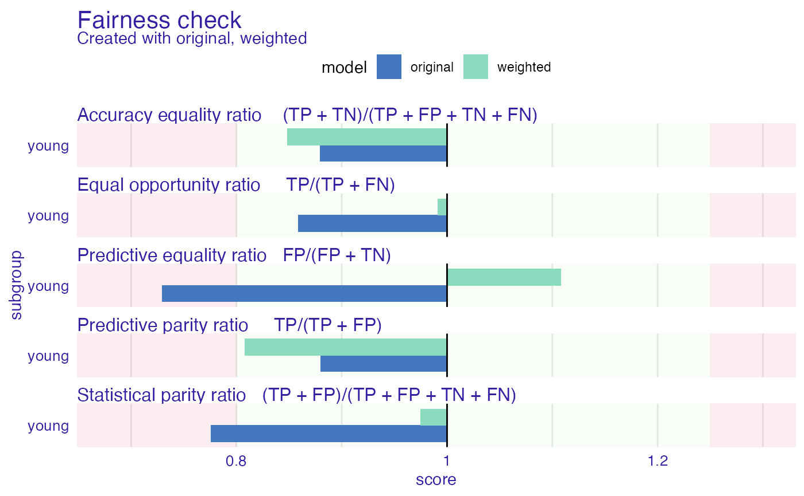

Function returns weights for model training. The purpose of this weights is to mitigate bias in statistical parity. In fact this could potentially worsen the overall performance in other fairness metrics. This affects also model's performance metrics (accuracy).
reweight(protected, y)Arguments
| protected | factor, protected variables with subgroups as levels (sensitive attributes) |
|---|---|
| y | numeric, vector with classes 0 and 1, where 1 means favorable class. |
Value
numeric, vector of weights
Details
Method produces weights for each subgroup for each class. Firstly assumes that protected variable and class are independent and calculates expected probability of this certain event (that subgroup == a and class = c). Than it calculates the actual probability of this event based on empirical data. Finally the weight is quotient of those probabilities
References
This method was implemented based on Kamiran, Calders 2011 https://link.springer.com/content/pdf/10.1007/s10115-011-0463-8.pdf
Examples
data("german")
data <- german
data$Age <- as.factor(ifelse(data$Age <= 25, "young", "old"))
data$Risk <- as.numeric(data$Risk) -1
# training 2 models
weights <- reweight(protected = data$Age, y = data$Risk)
gbm_model <- gbm::gbm(Risk ~. , data = data)
#> Distribution not specified, assuming bernoulli ...
gbm_model_weighted <- gbm::gbm(Risk ~. , data = data, weights = weights)
#> Distribution not specified, assuming bernoulli ...
gbm_explainer <- DALEX::explain(gbm_model, data = data[,-1], y = data$Risk)
#> Preparation of a new explainer is initiated
#> -> model label : gbm ( default )
#> -> data : 1000 rows 9 cols
#> -> target variable : 1000 values
#> -> predict function : yhat.gbm will be used ( default )
#> -> predicted values : No value for predict function target column. ( default )
#> -> model_info : package gbm , ver. 2.1.8 , task classification ( default )
#> -> predicted values : numerical, min = 0.1249317 , mean = 0.6971694 , max = 0.97531
#> -> residual function : difference between y and yhat ( default )
#> -> residuals : numerical, min = -0.9486537 , mean = 0.002830555 , max = 0.7990927
#> A new explainer has been created!
gbm_weighted_explainer <- DALEX::explain(gbm_model_weighted, data = data[,-1], y = data$Risk)
#> Preparation of a new explainer is initiated
#> -> model label : gbm ( default )
#> -> data : 1000 rows 9 cols
#> -> target variable : 1000 values
#> -> predict function : yhat.gbm will be used ( default )
#> -> predicted values : No value for predict function target column. ( default )
#> -> model_info : package gbm , ver. 2.1.8 , task classification ( default )
#> -> predicted values : numerical, min = 0.13108 , mean = 0.6993996 , max = 0.9760045
#> -> residual function : difference between y and yhat ( default )
#> -> residuals : numerical, min = -0.9436872 , mean = 0.0006003612 , max = 0.8184989
#> A new explainer has been created!
fobject <- fairness_check(gbm_explainer, gbm_weighted_explainer,
protected = data$Age,
privileged = "old",
label = c("original","weighted"))
#> Creating fairness classification object
#> -> Privileged subgroup : character ( Ok )
#> -> Protected variable : factor ( Ok )
#> -> Cutoff values for explainers : 0.5 ( for all subgroups )
#> -> Fairness objects : 0 objects
#> -> Checking explainers : 2 in total ( compatible )
#> -> Metric calculation : 12/12 metrics calculated for all models
#> Fairness object created succesfully
# fairness check
fobject
#>
#> Fairness check for models: original, weighted
#>
#> original passes 3/5 metrics
#> Total loss: 1.004565
#>
#> weighted passes 5/5 metrics
#> Total loss: 0.519821
#>
plot(fobject)

# radar
plot(fairness_radar(fobject))